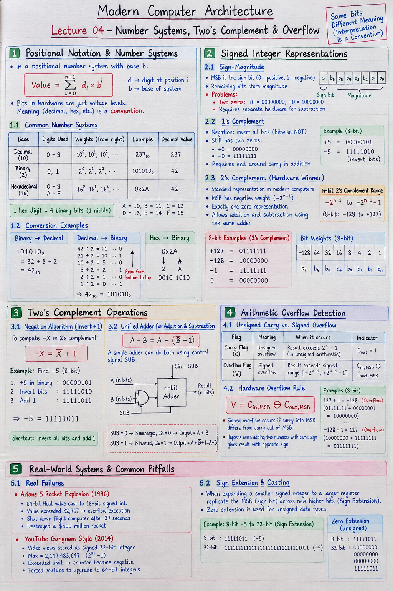

Short Notes & Visual Summary
Quick summary and key rules for Lecture 04:
- Unsigned \(n\)-bit Range: \(0 \text{ to } 2^n - 1\) (8-bit: \(0 \text{ to } 255\))
- 2's Complement \(n\)-bit Range: \(-2^{n-1} \text{ to } +2^{n-1} - 1\) (8-bit: \(-128 \text{ to } +127\))
- 2's Complement Negation Shortcut: Invert all bits and add 1 (\(-X = \bar{X} + 1\)).
- Unified Subtraction Rule: \(A - B = A + (\bar{B} + 1)\). Subtraction is executed on an adder by setting \(C_{\text{in}}=1\) and inverting input \(B\).
- Hardware Signed Overflow Formula: \(\text{Overflow} = C_{\text{in, MSB}} \oplus C_{\text{out, MSB}}\) (Overflow occurs if carry into MSB differs from carry out of MSB).

Click image to open high-resolution version in new tab
Positional Notation & Conversions
1.1 Binary, Decimal & Hexadecimal Bases
Bits in silicon carry no inherent human meaning—a pattern of 8 bits like 11111111 is just a physical voltage state. The interpretation of binary sequences is a software/hardware convention.
In positional numbering systems, the total value is calculated by multiplying each digit by its base raised to its position index:
- Decimal (Base 10): Uses digits 0–9. Weights are powers of 10 (\(10^0=1, 10^1=10, 10^2=100\)).
- Binary (Base 2): Uses digits 0 and 1. Weights are powers of 2 (\(1, 2, 4, 8, 16, 32, 64, 128\)).
- Hexadecimal (Base 16): Uses digits 0–9 and letters A–F (\(A=10, B=11, C=12, D=13, E=14, F=15\)). Hex provides a compact representation where 1 hex digit represents exactly 4 binary bits (a nibble).
1.2 Conversion Methods & Powers of 2
Fast conversions between representations are mandatory skills for low-level systems programming:
- Binary to Decimal: Sum the positional weights of all 1-bits (e.g., \(101010_2 = 32 + 8 + 2 = 42_{10}\)).
- Decimal to Binary: Repeatedly divide by 2 and read the remainders from bottom to top.
- Hex to Binary: Convert each hex character into its 4-bit binary equivalent (e.g., \(\text{0x2A} \implies 2=0010_2, A=1010_2 \implies 00101010_2\)).
Signed Integers & Representations
2.1 Sign-Magnitude Representation
To store negative numbers in binary, hardware engineers evaluated three historical formats. The simplest conceptual scheme is Sign-Magnitude, which reserves the most significant bit (MSB) as a sign flag (\(0 = \text{positive}, 1 = \text{negative}\)) while the remaining bits store the absolute magnitude.
- Dual Zero Problem: Contains two distinct bit patterns for zero: \(+0 = 00000000_2\) and \(-0 = 10000000_2\). This wastes silicon and complicates equality comparisons.
- Separate ALU Hardware: Standard binary adders fail when adding a positive and negative number (e.g., \(+5 + (-5) \neq 0\)). Subtracting requires building a dedicated hardware subtractor unit.
2.2 1's Complement Representation
1's Complement negates a number by inverting every bit (bitwise NOT). While it simplifies negation, it still suffers from two zeros (\(+0 = 00000000_2\) and \(-0 = 11111111_2\)) and requires end-around carry logic during addition.
2.3 2's Complement: The Hardware Winner
2's Complement is the universal standard for signed integer arithmetic in modern computers. It assigns a negative weight to the MSB (\(-2^{n-1}\)).
MSB Weight: \(-128\). Other bit weights: \(+64, +32, +16, +8, +4, +2, +1\).
- \(+127 = 01111111_2 = (0 + 64 + 32 + 16 + 8 + 4 + 2 + 1)\)
- \(-128 = 10000000_2 = (-128 + 0)\)
- \(-1 = 11111111_2 = (-128 + 64 + 32 + 16 + 8 + 4 + 2 + 1)\)
- \(0 = 00000000_2\) (Exactly one unique zero representation!).
Two's Complement Operations
3.1 Negation Algorithm (Invert + 1)
To compute the negative equivalent of any number \(-X\) in 2's complement hardware:
Step-by-Step Example (Find \(-5\) in 8 bits):
- Write \(+5\) in binary:
00000101 - Invert all bits (bitwise NOT):
11111010 - Add 1 to the result:
11111011(This is \(-5\)).
3.2 Unified Adder for Addition & Subtraction
The elegance of 2's complement is that subtraction is identical to addition of a negative number (\(A - B = A + (-B) = A + \bar{B} + 1\)).
A single binary adder circuit performs both addition and subtraction. By feeding input \(B\) through XOR gates controlled by a SUB control signal and connecting SUB to the adder's initial carry-in (\(C_{\text{in}}\)):
- When
SUB = 0: Passes \(B\) unchanged and \(C_{\text{in}}=0 \implies \text{Output} = A + B\). - When
SUB = 1: Inverts \(B\) to \(\bar{B}\) and sets \(C_{\text{in}}=1 \implies \text{Output} = A + \bar{B} + 1 = A - B\).
Arithmetic Overflow Detection
4.1 Unsigned Carry vs. Signed Overflow
Fixed-width registers cannot hold results that exceed their bit-width bounds. However, hardware distinguishes between two distinct types of out-of-range conditions:
- Unsigned Carry Flag (\(C\)): Indicates that an unsigned operation exceeded \(2^n - 1\). Signified when the adder's final carry-out (\(C_{\text{out}}\)) equals 1.
- Signed Overflow Flag (\(V\)): Indicates that a signed operation exceeded the 2's complement range (\([-128, +127]\) for 8 bits). Adding two positive numbers yields a negative result, or adding two negative numbers yields a positive result.
4.2 Hardware Overflow Rule (\(C_{\text{in}} \oplus C_{\text{out}}\))
Computer hardware detects signed overflow instantaneously using a single XOR gate connected to the most significant bit (MSB) adder stage:
Signed overflow occurs if and only if the carry brought INTO the sign bit position differs from the carry generated OUT OF the sign bit position.
Real-World Systems & Common Pitfalls
5.1 Real Failures (Ariane 5 & Gangnam Style)
Integer overflow and casting mismatches cause catastrophic software and hardware failures:
- Ariane 5 Rocket Explosion (1996): A 64-bit floating-point value was cast into a 16-bit signed integer. The value exceeded 32,767, triggering an unhandled overflow exception that shut down the flight computer 37 seconds after launch, destroying a $500 million rocket.
- YouTube Gangnam Style View Counter (2014): YouTube stored video view counts as a signed 32-bit integer (max value \(2,147,483,647\)). When Gangnam Style exceeded this limit, the counter wrapped around to negative numbers, forcing YouTube to upgrade view counters to 64-bit integers.
5.2 Sign Extension & Casting Bugs
When expanding a smaller signed integer into a larger register (e.g., 8-bit to 32-bit), hardware must perform Sign Extension by replicating the MSB sign bit across all newly added upper bit positions (e.g., \(-5 = 11111011_2 \implies 11111111111111111111111111111011_2\)). Zero extension is used for unsigned data types.
Original PDF Notes
Below is the original PDF document for your reference: